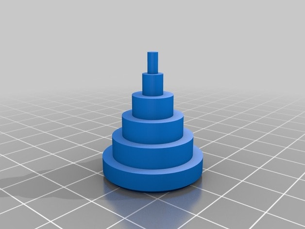
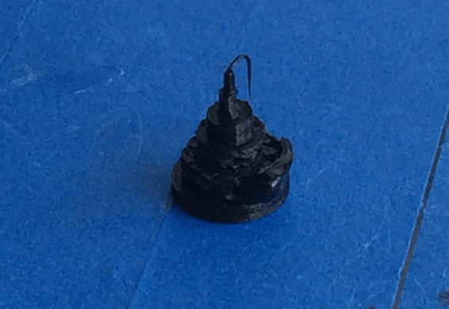
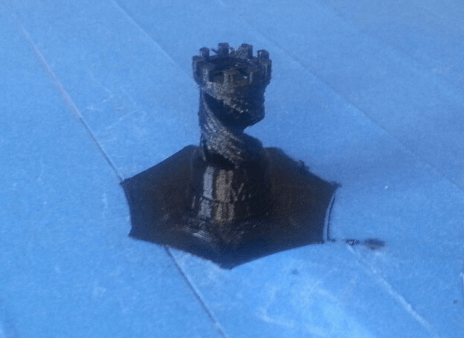
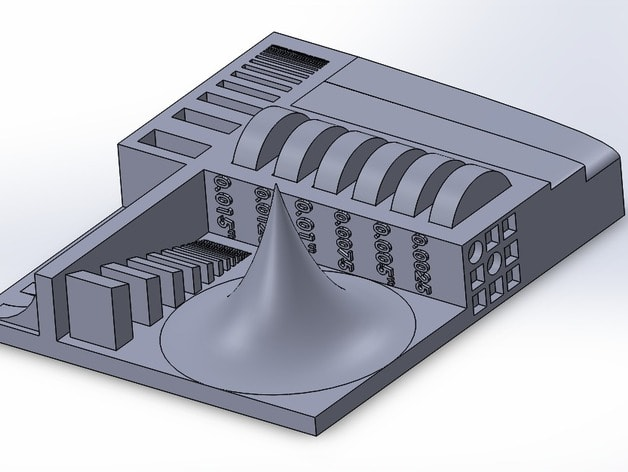
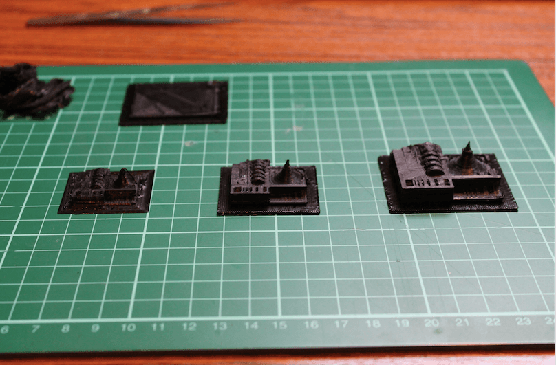
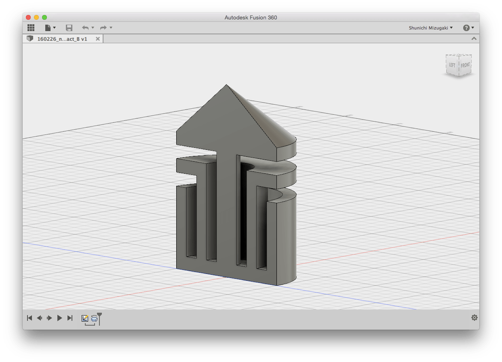
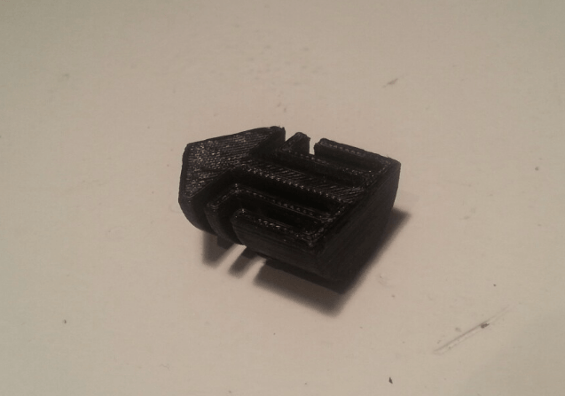
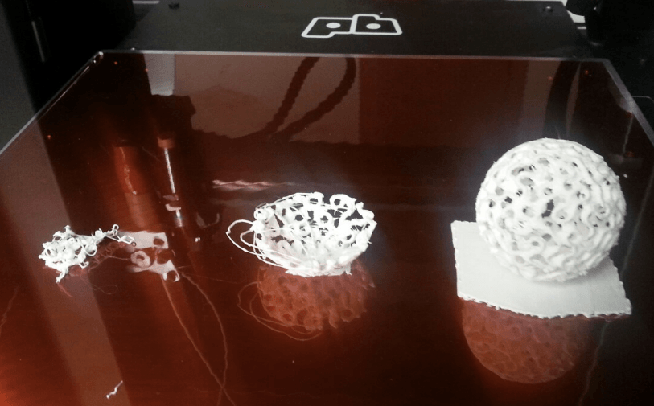

The assignments for week5 were as below;
XXXXXX
3D Printing
XXXXXX
3D Scanning
XXXXXX
The first assignment of this week was group assignments, which tests design rule, possibility and limitation of 3D printing. For instance:
A) Shoot Out Test - Tower
First, we printed a cylinder pyramid, which had five layered structure. As the picture of printing output below, the top os the structure was not printed clearly, because;
|  |  |
2015 3D Printer Shoot Out Test Model
B) Shoot Out Test - Rook
Reflecting the result of previous test, we printed the Rook as below, setting the size of the object: 2cm*2cm*3cm. The output was satisfying because of the appropriate priting size and appropriate printing speed.
|  |
Rook - 2015 3D Printer Shoot Out Test Model
C) Tolerance Test
Another group working team printed tolelance test object, and the result indicated the appropriate size to print the detailed object. Looking at the top of cones of each size of models, the largest one is printed clearly compared to the others.
|  |  |
3D Printer Tolerance Test Model
This result shows the limitation of preciseness printing for grooves and brows. Acttually, it is difficult to print the tiny characters which we can see on the side of torelance test model, however, other parts are generally printed clearly.Largest one of the printed test objects
After checking the limitation of our printer, which was group assingments, I enterd the practice for designing an object (small, few cm) that could not be made subtractively.
First, I researched what designs cannot be modelled subtractively as below. The image below indicates that the objects like;
Designs which cannot be modelled subtractively
A) Simple Test - Grooved Cylindar
At the beginning, I made simple object, which the image above lists as example using Autodesk Fusion 360. I drawed the model and printed it, and was able to do it without failure and mistakes thanks to the testing above.
|  |  |
Grooved Cylindar
Download STL
B) Sphere with wave on its surfase
Next, I used Antimony to draw parametric models. To tell the truth, I would like to make the hollow polyhedoron with honny-come structure, and reasearched a bit. However, I gave up it because 1) the drawing complex parametric model by Fusion 360 was a bit diffucult for me, 2) I thought it was impossible to print the tiny structure by our 3D printer.
I made a sphere with wave on its surfase as the picture below by Antimony. I drawed two spheres and subtract the space of smaller one from the bigger sphere, then inverted wave patterns to it.
Sphere with wave on its surfase on Antimony
Download STL
|  |
Printing Process
Sphere with wave on its surfase
C) Pipe structured object
After that, I tried to make another model by Antimony as below, which was a object something like piped pattern. Thanks to Antimony, I was able to draw the pattern very easily, however, Antimony has only three patterns of dedault volume designs, so I wish there were more patterns.
Pipe structured object
Download STL
Printing result
Next assingment was trying to 3D scanning. Prof. Niel introduced us several scanning tools and we could tried several scanning methods which were open ource apps and facilities of Fablab Amsterdam.
A) Skanect
First, we tried Skanect, which was open source scanning software using Kinect as scanning device. Skanect can capture a full color 3D model of an object, a person or a room.
Scnanning Scene in class
Self portrait object by Skanect
Download OBJ
B) 123D Catch App
Next, I used Autodesk 123D Catch, which is open source application on smartphone enabling us to scan the object by smartphone easily.
C) Roland Modela MDX-20
Next, we used CNC milling machine: Roland Modela MDX-20 as scannning tool. It was very surprising for me that it can be used as scanning machine. Mainly, it was used to scan very tiny object pricisely as below.
CNC milling machine: Roland Modela MDX-20
Scanning scene
Result of scanning FabTiny ISP
D) Sense
Finally, we used Sense, which was the handy scanning tool as the image below. It can scan objects with color quickly. Unfortunately, I did not test this tools enough because of lack of my time.
1. Basic Information
2. Testing Design Rule
3. Practice - 3D Printing
4. Practice - 3D Scanning
Here are my output files for week3:
Lecture Note
Tools
(3D Printing)
(3D Scanning)
Learning Support
Here you can find this weeks's lectures on VIMEO:
(2016.02.24)
(2016.03.02)